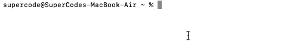
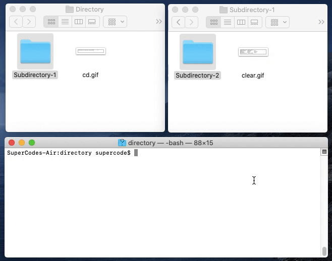
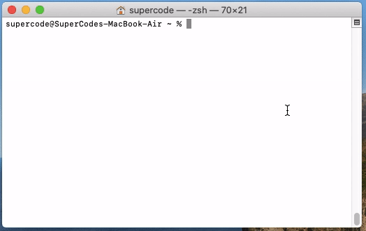
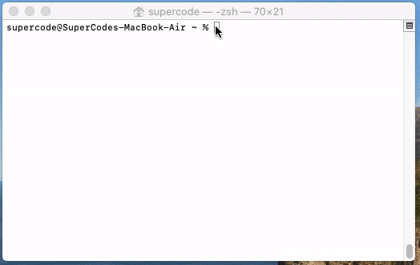
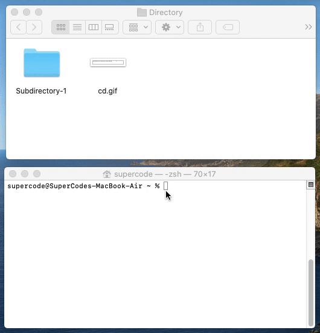
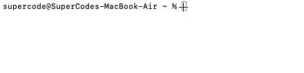
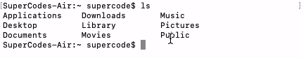

Terminal Basics
Das Terminal von OS X ist für die Ein- und Ausgabe zuständig. Die Verarbeitung der Befehle übernimmt die sogenannte „Shell“, die beim Aufrufen des Terminals automatisch gestartet wird. Letzten Endes ist die Shell vergleichbar mit dem Finder von OS X – also eine Art Basisprogramm, das die Befehle zur Bedienung des Computers bereitstellt, sie weiterleitet und gegebenenfalls andere Programme startet. In Linux-Betriebssystemen könnt ihr sehr viel sehr einfach mit Terminal-Befehlen erledigen. Auch wenn das auf den ersten Blick sehr „nerdig“ und ungewohnt wirken sollte.
Zunächst öffnet ihr Terminal über die Mac-Spotlight-Suche mit dem Shortcut "cmd+leertaste". Dann suchst du einfach nach "Terminal" und öffnest das Programm.
Also alle da draussen, die gerade erst damit anfangen, hier sind unsere 10 Basis-Befehle, die jeder Mac Benutzer kennen sollte.
| Command | Description | Gif |
|---|---|---|
| pwd | Print Working Directory - Zeigt das Verzeichnis an, in dem du dich gerade befindest. |
Command pwd |
| ls | Hierbei wird eine ausführliche Liste der Ordner und Dateien angezeigt |
Command ls
|
| cd | Verzeichnis wechseln | |
| mv | Eine Datei verschieben oder umbenennen | |
| rm | Dateien und Verzeichnisse löschen |  |
| kill | Einen Prozess sofort beenden |  |
| man | Systemhandbuch (manual oder manpage) zu einem Befehl, einer Anwendung oder Datei |  |
| sudo | Einen Befehl als Admin ausführen |  |
| date | Zeigt das aktuelle Datum und die Uhrzeit an |  |
| clear | Verschiebt die Promt so, dass im aktuellen Terminal-Fenster alles leer ist |  |